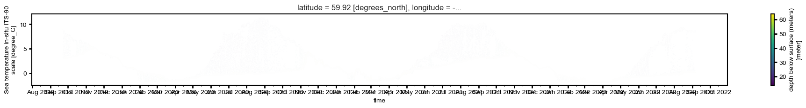
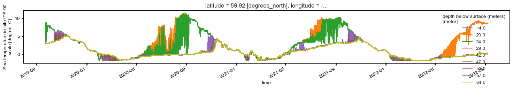
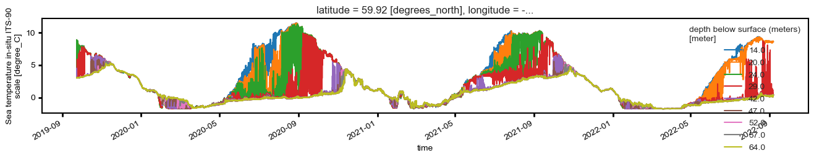
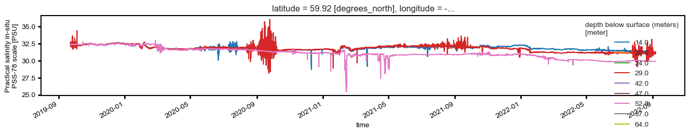

Mooring Synthesis of Initial NC data (offline)¶
19BS-5A¶
from netcdf files
plot all depths of each parameter on each other for comparative purposes
Temperature, Salinity, Pressure in this notebook. See companion for Oxygen, Chlor, ADCP/currents, etc
import xarray as xa
import pandas as pd
import numpy as np
import cmocean
#wrap the plot in image settings for visual appeal
# may be able to make this cleaner or just a preset
%run '../../settings/mpl_plot_settings.py'
%matplotlib inline
import matplotlib.pyplot as plt
import matplotlib.dates as mdates
from matplotlib.dates import YearLocator, WeekdayLocator, MonthLocator, DayLocator, HourLocator, DateFormatter
import matplotlib.ticker as ticker
/Users/bell/Programs/ECOFOCI_Processing_Archive/settings/mpl_plot_settings.py:10: MatplotlibDeprecationWarning: The seaborn styles shipped by Matplotlib are deprecated since 3.6, as they no longer correspond to the styles shipped by seaborn. However, they will remain available as 'seaborn-v0_8-<style>'. Alternatively, directly use the seaborn API instead.
plt.style.use('seaborn-ticks')
ncfiles = '/Users/bell/ecoraid/2019/Moorings/19bs5a/final_data_cf/19bs5*.nc'
mfd = xa.open_mfdataset(ncfiles)
mfd
<xarray.Dataset>
Dimensions: (time: 155474, latitude: 1, longitude: 1, depth: 9)
Coordinates:
* time (time) datetime64[ns] 2019-09-22T23:50:00 ... 2022-09-06T16...
* latitude (latitude) float64 59.92
* longitude (longitude) float64 -171.7
* depth (depth) float64 14.0 20.0 24.0 29.0 42.0 47.0 52.0 57.0 64.0
Data variables:
temperature (time, depth, latitude, longitude) float64 dask.array<chunksize=(155474, 4, 1, 1), meta=np.ndarray>
conductivity (time, depth, latitude, longitude) float64 dask.array<chunksize=(155474, 3, 1, 1), meta=np.ndarray>
salinity (time, depth, latitude, longitude) float64 dask.array<chunksize=(155474, 3, 1, 1), meta=np.ndarray>
pressure (time, depth, latitude, longitude) float64 dask.array<chunksize=(155474, 4, 1, 1), meta=np.ndarray>
Attributes: (12/33)
Latitude_DegMMddW: 59 54.910 N
Longitude_DegMMddN: 171 42.070 W
MooringID: 19BS-5A
platform_deployment_date: 2019-09-22T23:50:00Z
platform_deployment_cruise_name: DY1908
platform_recovery_date: 2022-09-06T16:00:00Z
... ...
InstrumentSerialNumber: 1850
InstrumentType: SBE-37
date_created: 2022-09-29T08:14:58Z
date_modified:
QC_indicator: unknown
history: Trimmed to deployment.Temperature (full temporal resolution)¶
upper_temp = mfd.temperature.max(axis=0).max(axis=0).values
lower_temp = -2
fig, ax = plt.subplots(1,figsize=(24, 2))
mfd.temperature.T.plot(ax=ax,yincrease=False,vmin=lower_temp,vmax=upper_temp,cmap=cmocean.cm.thermal)
ax.xaxis.set_major_locator(DayLocator(bymonthday=1))
ax.xaxis.set_minor_locator(DayLocator(bymonthday=15))
ax.xaxis.set_minor_formatter(DateFormatter('%b %Y'))
ax.xaxis.set_major_formatter(DateFormatter(''))
ax.xaxis.set_tick_params(which='major', pad=3)
ax.xaxis.set_tick_params(which='minor', pad=5)

fig, ax = plt.subplots(1,figsize=(24, 2))
mfd.isel(latitude=0,longitude=0).plot.scatter(x="time",y="temperature",hue="depth",s=1,ax=ax)
ax.xaxis.set_major_locator(DayLocator(bymonthday=1))
ax.xaxis.set_minor_locator(DayLocator(bymonthday=15))
ax.xaxis.set_minor_formatter(DateFormatter('%b %Y'))
ax.xaxis.set_major_formatter(DateFormatter(''))
ax.xaxis.set_tick_params(which='major', pad=3)
ax.xaxis.set_tick_params(which='minor', pad=5)

Note: not everything has constant sample frequencies so if nan’s are in the mix, then lineplots are less useful (see plot below) Will want to resample to hourly or daily to evaluate those
fig, ax = plt.subplots(1,figsize=(18, 2))
mfd.temperature.isel(latitude=0,longitude=0).plot.line(x="time",hue="depth",ax=ax);

Salinity(full temporal resolution)¶
fig, ax = plt.subplots(1,figsize=(16, 2))
mfd.isel(latitude=0,longitude=0).plot.scatter(x="time",y="salinity",hue="depth",s=1,ax=ax)
<matplotlib.collections.PathCollection at 0x165df0430>
Pressure (full temporal resolution)¶
fig, ax = plt.subplots(1,figsize=(16, 2))
mfd.isel(latitude=0,longitude=0).plot.scatter(x="time",y="pressure",hue="depth",s=1,ax=ax)
<matplotlib.collections.PathCollection at 0x16612cdf0>
Hourly/Interpolated plots Plots¶
Because of the different timebases… quickly either interpolate (linearly) or downsample (this seems slower) to plot all series
# mfd_hourly = mfd.resample(time='1H').median() #not fast
mfd_up = mfd.interpolate_na("time")
fig, ax = plt.subplots(1,figsize=(16, 2))
mfd_up.temperature.plot(x="time",hue="depth",ax=ax);

fig, ax = plt.subplots(1,figsize=(16, 2))
mfd_up.salinity.plot(x="time",hue="depth",ax=ax);

upper_temp = mfd_up.temperature.max(axis=0).max(axis=0).values
lower_temp = -2
fig, ax = plt.subplots(1,figsize=(16, 2))
mfd_up.temperature.T.plot(ax=ax,yincrease=False,vmin=lower_temp,vmax=14,cmap=cmocean.cm.thermal)
<matplotlib.collections.QuadMesh at 0x16664d390>
Chlorophyll Hourly Interpolated Plots¶
fig, ax = plt.subplots(1,figsize=(16, 2))
mfd_up.chlor_fluorescence.plot(x="time",hue="depth",ax=ax);
(mfd_up.chlor_fluorescence*0).plot(x="time",hue="depth",ax=ax,add_legend=False);
---------------------------------------------------------------------------
AttributeError Traceback (most recent call last)
Cell In [13], line 2
1 fig, ax = plt.subplots(1,figsize=(16, 2))
----> 2 mfd_up.chlor_fluorescence.plot(x="time",hue="depth",ax=ax);
3 (mfd_up.chlor_fluorescence*0).plot(x="time",hue="depth",ax=ax,add_legend=False);
File ~/miniconda3/envs/py310/lib/python3.10/site-packages/xarray/core/common.py:272, in AttrAccessMixin.__getattr__(self, name)
270 with suppress(KeyError):
271 return source[name]
--> 272 raise AttributeError(
273 f"{type(self).__name__!r} object has no attribute {name!r}"
274 )
AttributeError: 'Dataset' object has no attribute 'chlor_fluorescence'
upper = 50
lower = 0
fig, ax = plt.subplots(1,figsize=(16, 2))
mfd_up.chlor_fluorescence.T.plot(ax=ax,yincrease=False,vmin=lower,vmax=upper,cmap=cmocean.cm.algae)
Compare Timeseries to CTD Casts¶
Recovery CTDXXX on Sikuliaq cruise, not yet obtained.
import ecofocipy.io.erddap as erddap
url = "http://ecofoci-field.pmel.noaa.gov:8080/erddap"
erddap.test_erddap_connection(url=url) #basic test for connection to internal server, no response is a good thing
#grap deploy/recover cast data from erddap hosted sets - you have to know which profile you want though
depcast = erddap.erddapCTDretrieve(url=url,cruiseid='dy2103',qclevel='preliminary',concastno='006')
# reccast = erddap.erddapCTDretrieve(url=url,cruiseid='dy2012',qclevel='preliminary',concastno='024')
QC Notes¶
(PJS needs to vet these)
Generate to_edit files for PJS¶
these are usually salinity focused and need the ctd casts as well as the salinity timeseries.
save the native time scale, not the interpolated or upscaled version
with pd.ExcelWriter('19bs8a_salinity_to_edit.xlsx') as writer:
for depthkey in mfd.to_dataframe().salinity.groupby(level=[1]).groups.keys():
if not (mfd.to_dataframe().salinity.groupby(level=[1]).get_group(depthkey).dropna(how='all')).empty:
print(f'saving {depthkey}')
(mfd.to_dataframe().salinity.groupby(level=[1]).get_group(depthkey).dropna(axis=0)).to_excel(writer, sheet_name=str(depthkey))
depcast.to_excel(writer, sheet_name=depcast.profile_id.unique()[0])
# reccast.to_excel(writer, sheet_name=reccast.profile_id.unique()[0])